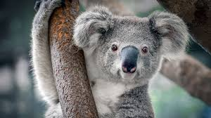

Koala
- Nombre Científico:
- Phascolarctos cinereus
- Definición:
- Es el único representante existente de la familia Phascolarctidae y sus parientes vivos más cercanos son los wombats.
- Hábitad:
- Vive en las zonas costeras de las regiones este y sur australianas, en los estados de Queensland, Nueva Gales del Sur, Victoria y Australia Meridional.
- Alimento:
- Viven en zonas abiertas de bosques de eucaliptos, cuyas hojas constituyen la mayor parte de su dieta.
